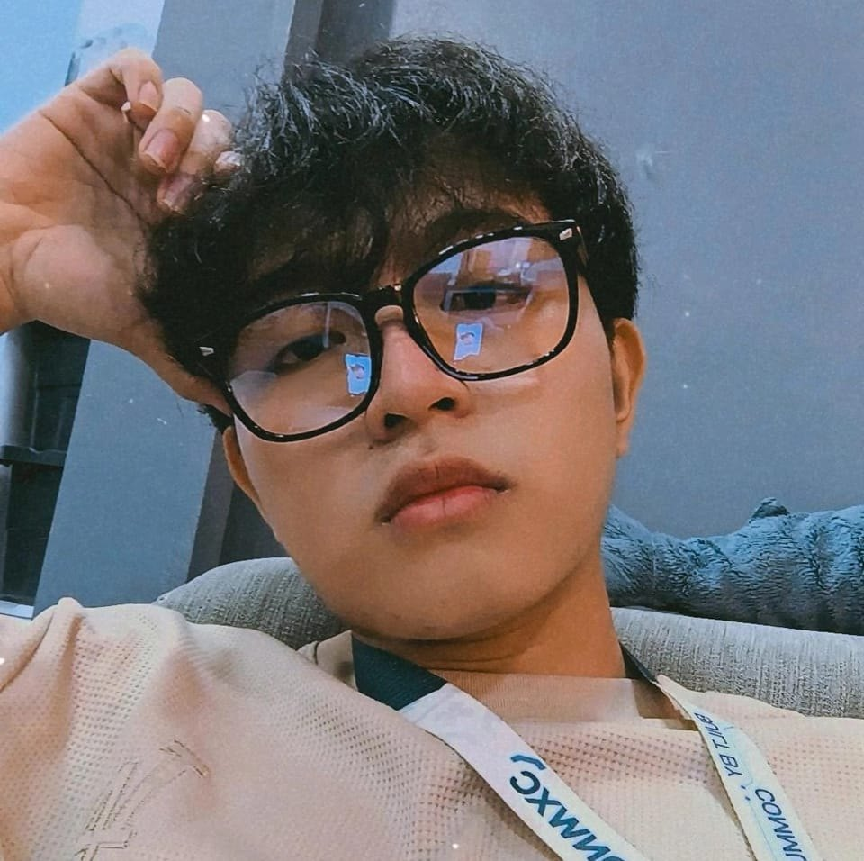

About Me

Hello! I’m Aryan, a BSIT student specializing in Multimedia Arts and Animation. I enjoy creating digital solutions and user-centered designs. This portfolio showcases some of my recent projects.
Projects
Visual Chronicles: A Motion Graphics Short
A 2D animated short film that explores storytelling through motion graphics, emphasizing transitions, visual rhythm, and sound synchronization.
ViewRe:Design" – UI/UX Case Study
A mobile-first redesign of a popular app, showcasing skills in graphic design, typography, and visual hierarchy.
ViewTrackTern: Student Internship Monitoring System
A Laravel-powered web application for tracking internship progress, featuring supervisor verification and real-time student hour logs.
View